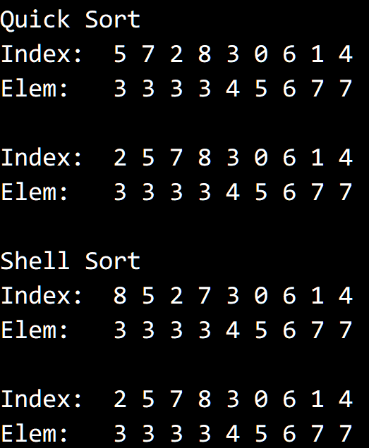

© 2019 《算法（第四版）》C# 题解 | Provided By 沈星繁
搜索解答
目前已完成到 2.5
2.5.18
上次更新：2019-02-11
题目
2.5.18 强制稳定。 编写一段能够将任意排序方法变得稳定的封装代码， 创建一种新的数据类型作为键，将键的原始索引保存在其中， 并在调用 sort() 之后再恢复原始的键。
解答
用和上题一样的 Wrapper 类进行排序。 排序之后，相同的元素会被放在一起，形成一个个子数组。 根据事先保存的原始下标对它们进行排序，即可将不稳定的排序稳定化。
结果： 
代码
using System;
using SortApplication;
namespace _2._5._18
{
class Program
{
class Wrapper<T> : IComparable<Wrapper<T>> where T : IComparable<T>
{
public int Index;
public T Key;
public Wrapper(int index, T elements)
{
this.Index = index;
this.Key = elements;
}
public int CompareTo(Wrapper<T> other)
{
return this.Key.CompareTo(other.Key);
}
}
static void Main(string[] args)
{
int[] data = new int[] { 5, 7, 3, 4, 7, 3, 6, 3, 3 };
QuickSort quick = new QuickSort();
ShellSort shell = new ShellSort();
Console.WriteLine("Quick Sort");
Stabilize(data, quick);
Console.WriteLine();
Console.WriteLine("Shell Sort");
Stabilize(data, shell);
}
static void Stabilize<T>(T[] data, BaseSort sort) where T : IComparable<T>
{
Wrapper<T>[] items = new Wrapper<T>[data.Length];
for (int i = 0; i < data.Length; i++)
{
items[i] = new Wrapper<T>(i, data[i]);
}
sort.Sort(items);
Console.Write("Index:\t");
for (int i = 0; i < items.Length; i++)
{
Console.Write(items[i].Index + " ");
}
Console.WriteLine();
Console.Write("Elem:\t");
for (int i = 0; i < items.Length; i++)
{
Console.Write(items[i].Key + " ");
}
Console.WriteLine();
Console.WriteLine();
int index = 0;
while (index < items.Length - 1)
{
while (index < items.Length - 1 &&
items[index].Key.Equals(items[index + 1].Key))
{
// 插入排序
for (int j = index + 1; j > 0 && items[j].Index < items[j - 1].Index; j--)
{
if (!items[j].Key.Equals(items[j - 1].Key))
break;
Wrapper<T> temp = items[j];
items[j] = items[j - 1];
items[j - 1] = temp;
}
index++;
}
index++;
}
Console.Write("Index:\t");
for (int i = 0; i < items.Length; i++)
{
Console.Write(items[i].Index + " ");
}
Console.WriteLine();
Console.Write("Elem:\t");
for (int i = 0; i < items.Length; i++)
{
Console.Write(items[i].Key + " ");
}
Console.WriteLine();
}
}
}